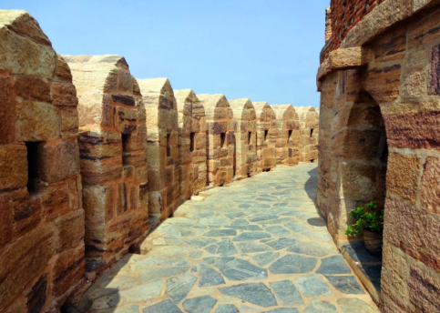

これは 𝐊𝐨𝐧𝐝𝐚 𝐑𝐞𝐝𝐝𝐢 というフォートです。
クルヌールという町にあります。
𝟏𝟔世紀にヴィジャヤナガラのてんおうによって作られました。
𝐊𝐨𝐧𝐝𝐚 𝐑𝐞𝐝𝐝𝐢 というてんおうはこのフォートにしんだそうです。
クルヌールのいんしょです。
てきからまもるようにたてられたそうです。
このフォートは「𝐎𝐤𝐤𝐚𝐝𝐮」「𝐒𝐚𝐫𝐢𝐥𝐞𝐫𝐮 𝐍𝐢𝐤𝐞𝐯𝐯𝐚𝐫𝐮」「𝐒𝐞𝐞𝐭𝐚𝐲𝐚」などのえいがえいがに見えるので、とても有名なフォートです。